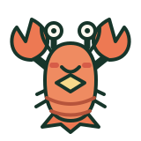
龍蝦遊戲間民主聖地噴泉
西瓜選市長
選一款遊戲
可用分類縮小範圍，也能隨機挑一款。
遊戲櫃
68 款遊戲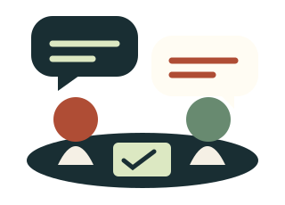
多拉談判練習室
從分蛋糕談到專案追加：先問清楚對方要什麼，再比方案、談交換。條件談不攏，也能好好收場。
開始遊戲 →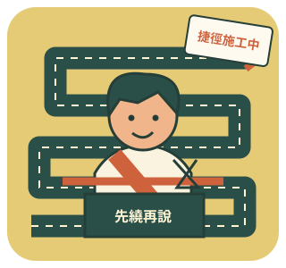
找事大挑戰・你的市長多拉洋
A 案還沒做完，多拉洋又想改 B 案。你來排工作、算重做成本，決定什麼時候該改案。
開始遊戲 →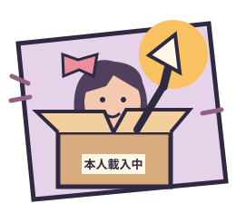
多拉訊號不穩大挑戰
一接工單就訊號不良，一開飯就滿格。幫多拉定位、調頻、分工，再剪一支反差短片。
開始遊戲 →
親子相處練習室
孩子不想抱抱、家事做到一半卡住，該怎麼開口？適合國小孩子和家長一起練。
開始遊戲 →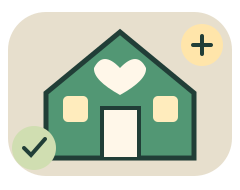
安心生活任務所
找出家裡的風險，再把洗手、食物保存和健康求助的步驟排好。
開始遊戲 →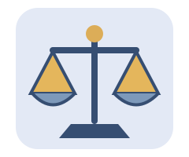
法普小學堂
讀一份生活情境文件，判斷退貨、租屋、婚姻財產或就醫時，誰能做什麼、下一步找誰。
開始遊戲 →多拉忘記大挑戰
蓋起三張道具卡再作答。記錯了，鍋子要飛向鬧鐘、龍蝦，還是宇宙？紀錄會說話。
開始遊戲 →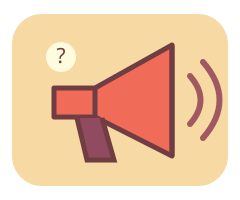
無知大聲公 🔉
選一句話，調整擴音，再看它傳了多遠。45 個虛構情境：音量能改變傳播範圍，不能改變真假。
開始遊戲 →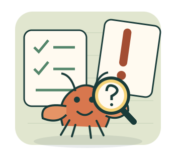
無知大挑戰
先讀原話，再挑一份資料查證。60 個虛構案例，翻到什麼證據，就下到什麼程度的結論。
開始遊戲 →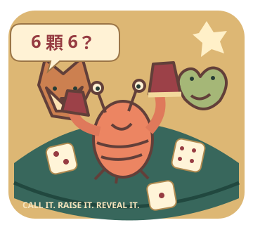
吹牛大挑戰
只能看自己的骰子。跟阿膨、阿風輪流喊全桌有幾顆某個點數；不信上家就開盅。
開始遊戲 →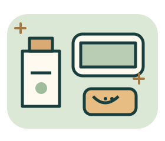
過敏兒保養小教室
碰到皮膚乾癢、居家過敏原或需要求助時，怎麼選？45 個情境，確認後可看附來源的解析。
開始遊戲 →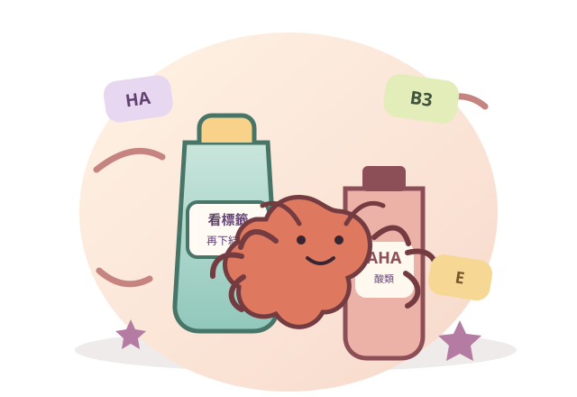
臉部保養品成分偵探
從定妝噴霧查到 A 醇、酸類、胜肽和保濕成分。34 個線索，找出各自的用途和限制。
開始遊戲 →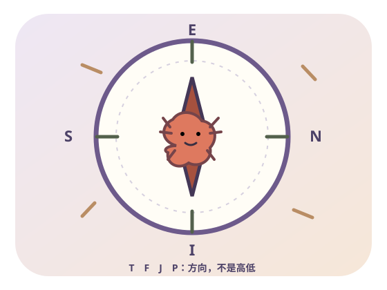
16 型偏好探索
用 80 道情境題看互動、資訊、決策和安排偏好。結果有四條量尺；接近中線就不硬分型。
開始遊戲 →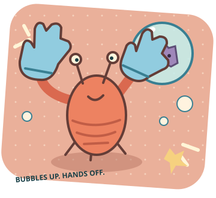
過敏搔癢大挑戰
按住藍色癢癢怪，把牠裝進泡泡。紅色抓抓手會斷連擊，別被它騙了。
開始遊戲 →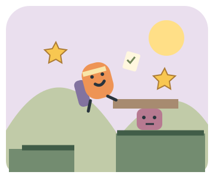
過動兒大冒險
跳裂縫、踩通知怪，把三件主線物品帶到終點。想繞路撿星星也行。
開始遊戲 →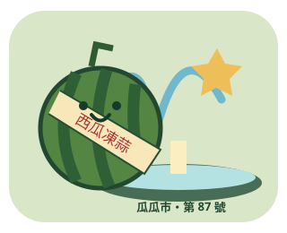
民主聖地噴泉西瓜選市長大挑戰
你是西瓜，對手是冬瓜。60 秒內閃過水柱、搶金票，靠衝刺和連擊拉開票數。
開始遊戲 →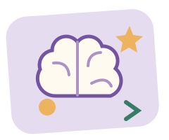
腦力補給站
找規律、串條件、走九宮格。18 道題不限時，答錯可以再試，也會保留第一次的結果。
開始遊戲 →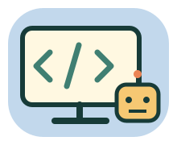
科技任務基地
在模擬電腦上整理檔案、練網路安全，再排指令讓機器人送信。適合國小一、二年級親子共玩。
開始遊戲 →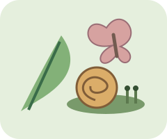
小動物與生物探索館
蜘蛛算昆蟲嗎？蝌蚪怎麼變青蛙？從 60 個情境觀察動物的身體、成長和棲地。
開始遊戲 →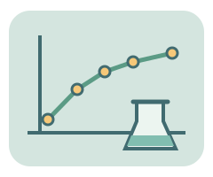
科學實驗室
從露點、雨量、熱湯冷卻到熱量和份量。挑一個模型，先預測，再只改一個條件比較結果。
開始遊戲 →好奇心研究所
水、光影、豆苗和磁鐵會怎麼變？先猜，再從模型紀錄找答案。
開始遊戲 →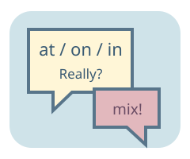
烙英文大挑戰
同一個介係詞換了情境還能用嗎？36 組題練時間、地點、動作和交通用法。
開始遊戲 →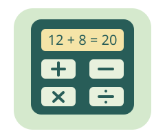
數學小學堂挑戰
24 道生活題，從四則運算、分數和時間，到周長和面積。每題可看拆解，也能重試。
開始遊戲 →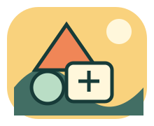
數感冒險島
擺數量、逛小店、找規律、讀鐘面。每站四關，附給國小一、二年級家長的陪玩提示。
開始遊戲 →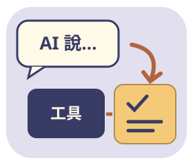
AI 小學堂・會問，也要會驗收
AI 說做完了，證據在哪？在 30 個情境裡翻紀錄、分卡片，判斷何時該查證或取得授權。
開始遊戲 →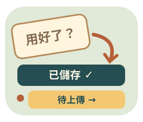
國文小學堂・動詞不要只會用
「用好了」是洗好、寫好，還是上傳好了？在 30 個情境裡選動詞、組句子，讓對方聽得懂進度。
開始遊戲 →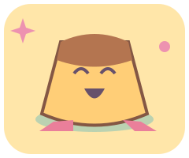
開心傻笑瘋挑戰
穿拖鞋的布丁、珍珠奶茶木星。戳一個怪東西，再選「好好玩」「好有趣」或「看起來很好吃」。
開始遊戲 →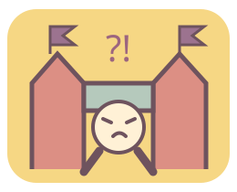
鬧事樂園
忘拿鑰匙、空油箱出門、帳單繳兩次。十六個卡通園區，挑一招看看災情怎麼演。
開始遊戲 →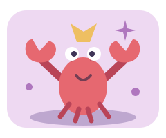
搞事小學堂
原版 12 幕由你挑道具、收場；另外 9 幕要排連鎖機關、接跑題的話，或修故障答錄機。
開始遊戲 →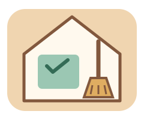
家事小學堂
把洗衣、收拾廚房和打掃的步驟排好。交接時，說清楚哪件做完了、哪件還沒。
開始遊戲 →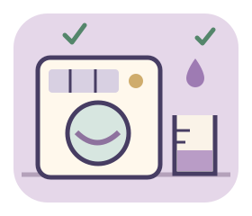
多拉真的不是生活白癡之 common sense 小學堂
洗衣精該放哪一格？從 48 個生活情境練看洗標、量清潔劑、保存食物和安全用電。
開始遊戲 →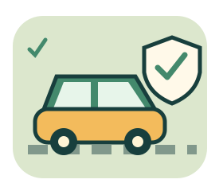
多拉絕對不是三寶之汽車知識跟道路安全小學堂
看互動路況，判斷誰先走、何時能迴轉或超車。也能練停車開門、看胎壓和緊急處置。
開始遊戲 →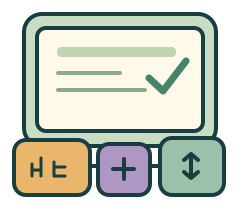
電腦快速鍵小學堂
在 Windows、macOS 或 Linux GNOME／KDE 的模擬桌面上按鍵，看看文字、檔案和視窗怎麼變。
開始遊戲 →思考偵探社
每案最多查兩條線索。把看到的事跟自己的推測分開，再用找到的證據改判。
開始遊戲 →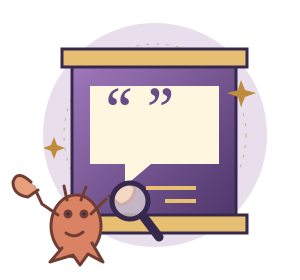
多拉語錄・金句開壇
抽一張金句，或玩八回合接龍。指定台詞、系列選編和原創改編都分開標示。
開始遊戲 →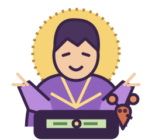
情緒價值印鈔機
八張訂單，要說好聽話、誠實接話，還是先查證？金箔能加倍，證據可不行。
開始遊戲 →提問與下指令練習場
找出問題缺了什麼、修正回覆，再驗收結果。送出前核對原話和目的，看看不同答法的後續。
開始遊戲 →
基隆探險
逛廟口、市場、孝三路和委託行；也能看看基隆的圖書館、居民日常和產業故事。
開始遊戲 →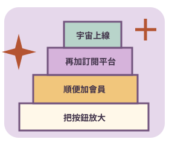
小改一下・需求膨脹大挑戰
一顆按鈕差點變成一座城。把工作排好順序、談好資源，再驗收原本答應的那件事。
開始遊戲 →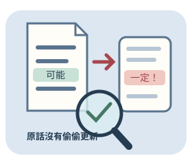
記憶篡改大挑戰
「可能」傳成「一定」，草稿傳成正式版。追查三手傳話的來源，再寫一份不走樣的交接。
開始遊戲 →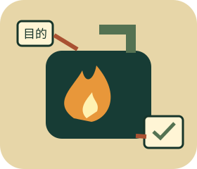
燃燒Token大挑戰
選媒介、找證據、組回覆，再看事情有沒有推進。省 Token 不是唯一目標。
開始遊戲 →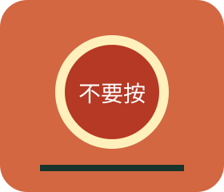
不要按那個按鈕
查銘牌、停授權、解散委員會，把紅鈕封存。或繼續按，看看地球怎麼變成會議室。
開始遊戲 →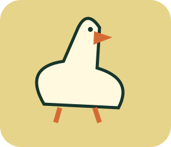
鵝作劇辦公室
你走一步，主管也走一步。把雷射筆叼回巢、把文件放到紙鵝桌，再從出口溜走。
開始遊戲 →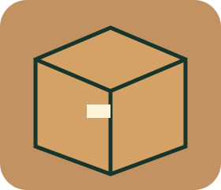
包裝比商品大
為三件玩具選紙箱、緩衝材和標籤。包裝體積至少要是商品的 50 倍，還得放得進電梯。
開始遊戲 →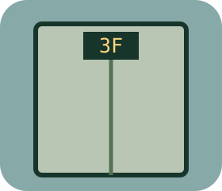
電梯社交地獄
三層樓、六幕。先選站哪裡再開口；認錯人或假裝手機響，會改變下一幕能說的話。
開始遊戲 →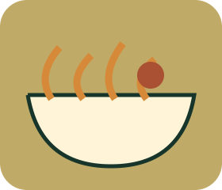
點餐越解釋越奇怪
先問清楚客人說的「不要辣」是什麼意思，再選麵、湯、調味和口感。你選的配料都會入碗。
開始遊戲 →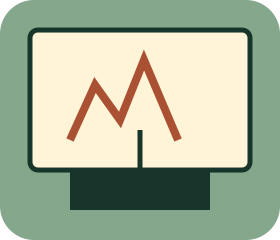
記者會答非所問
三場記者會，每場最多講五次。你丟哪張轉話題卡，記者就接著追問。
開始遊戲 →鬼打牆有限公司
追問跳針客服、刪掉導航的冤枉路，再從一大段話挑出真正新增的資訊。
開始遊戲 →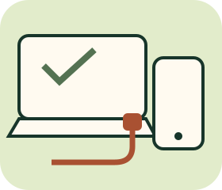
3C達人
先算總預算、分清 Mbps 和 MB/s，再挑筆電、配充電器，練習備份和安全更新。
開始遊戲 →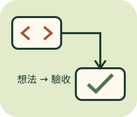
Vibe Coding 知識庫
查 12 張知識卡，再用六個情境練習看 Diff、除錯、測試、處理金鑰和確認發布。
開始遊戲 →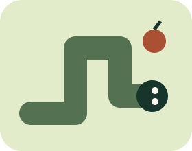
貪食蛇・水果巡航
吃水果會長大，別撞牆或咬到尾巴。三種速度，可用鍵盤、方向按鈕或滑動。
開始遊戲 →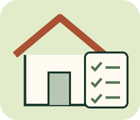
買房知識王
先算自備款、核貸差額和月付，再練比實價、看屋、讀契約和查交屋項目。
開始遊戲 →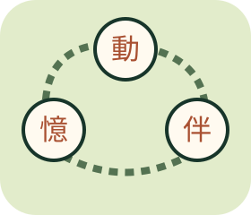
防失智大挑戰
回想清單、記位置、切換規則，認識降低生活風險和支持的方法。不做失智檢測，也不保證預防。
開始遊戲 →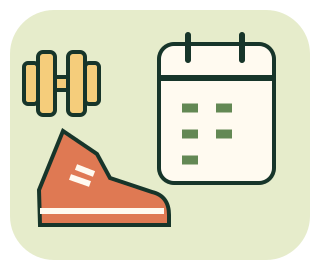
運動健身小學堂
用說話測試判斷強度，再安排一週的有氧、肌力和休息。遇到高溫或不舒服時，練習怎麼調整。
開始遊戲 →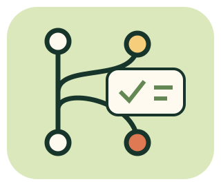
GitHub／GitLab 協作學習中心
Fork 和 Clone 有什麼不同？在模擬平台操作 Issue、PR／MR 和 CI，分清合併、測試通過和上線。
開始遊戲 →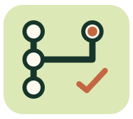
龍蝦 Git 時光機
幫龍蝦食堂改菜單：先暫存、提交，再開分支試做新湯，最後合回主線。
開始遊戲 →數位生活防詐練習場
收到補繳包裹費或朋友借錢的訊息？先打開細節，選管道查證，再依查到的資料決定怎麼做。
開始遊戲 →筆記修復工坊
修 Markdown 時可即時預覽。再練搜尋、分類、追查來源與版本，以及修好失效的連結。
開始遊戲 →程式邏輯新手村
排指令、看變數、跑測試，幫小龍蝦修村莊。從順序、條件一路玩到迴圈、函式和除錯。
開始遊戲 →龍蝦終端機探險
在模擬終端機輸入 pwd、ls 和 cd，找位置、整理檔案，再確認有沒有移到對的地方。
開始遊戲 →ADHD 日常賓果・全面過動版
從 40 格日常情境抽一張賓果卡。選混合或「坐不住」模式，勾出你遇過的事，橫直斜都能連線。
開始遊戲 →ㄅㄆㄇ 小小探險家
聽字音選注音、排拼字積木，練小一二拼、三拼和聲調。也能翻牌或拖小船去尋寶。
開始遊戲 →雙標大挑戰
先替別人做選擇，隔幾回合再用自己的身分遇上同一件事，看看有沒有換一把尺。
開始遊戲 →三秒就忘記
看一眼架上的物品，再從一堆干擾物裡找出來，放回原位。鏡像關要留意左右對調。
開始遊戲 →等一下星球
選一件想做卻一直拖的事，拆出現在做得了的第一步，再對付分心怪。
開始遊戲 →多拉甩尾俱樂部
車會自己往前。你負責轉向、閃香蕉、吃星星；甩尾蓄滿再放手，就能加速。共三條賽道。
開始遊戲 →青蛙過街
躲車、踩浮木和烏龜，把五隻青蛙送到對岸。支援方向鍵、WASD 和觸控。
開始遊戲 →過動大挑戰
跟拍、蓄力、看到紅燈就停手。也能玩正常／反向切換，或不限時練通知分流和工作交接。
開始遊戲 →這裡是娛樂與練習，不是醫療診斷或治療。分數不代表記憶力、人格或心理健康。
拖延遊戲的自訂任務只留在這個分頁，不會上傳或儲存。